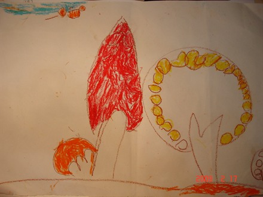
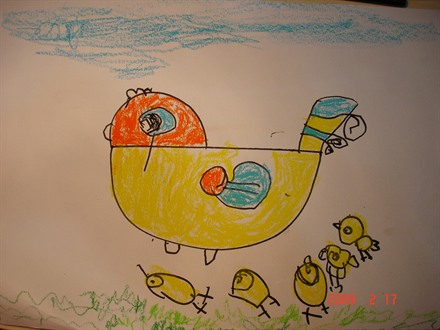
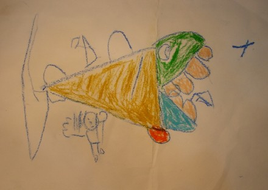
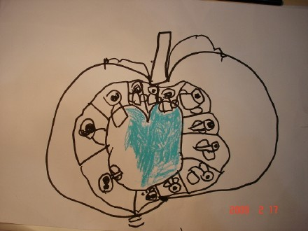
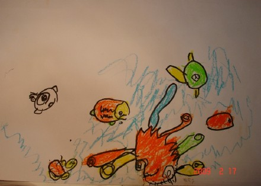
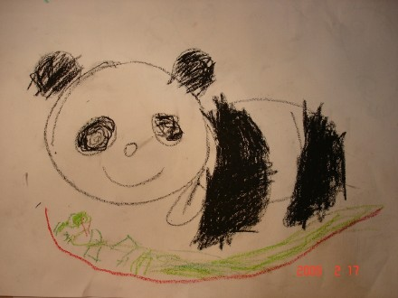
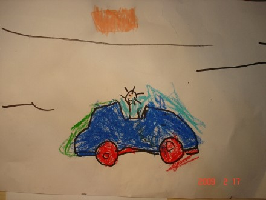
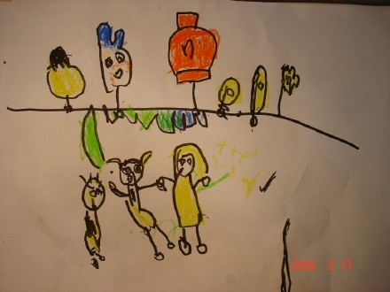
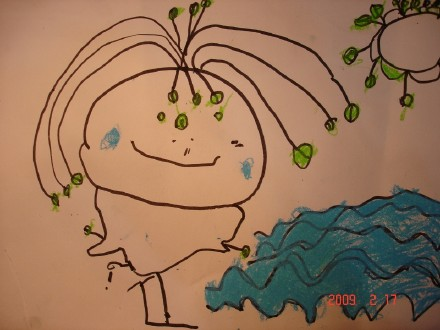

在灵童幼儿园的时候，曼曼整天就喜欢涂颜色，喜欢在画好轮廓的画上涂涂抹抹。但是，只要让她自己画点什么，哪怕是最简单的画条线、画个圆，她也会把小脑袋摇得像拨浪鼓说：“我不会画，我只会涂颜色”。转到大地之后，幼儿园的绘画课是从外面请的老师，真是教的不错。曼曼渐渐的喜欢自己涂鸦了，而且每次画完之后给我们讲她画的是什么，往往还是个挺复杂的故事，发现她小脑瓜里的内容还挺丰富的。

曼曼在大地幼儿园画的第一张画——“秋天的果子树”。大树的轮廓应该是老师画的。有意思的是左上角那个桔黄色像米老鼠一样的图案，原来那是一只小鸟，有头、身子和尾巴，左边那条线是小鸟长长的尖嘴巴。

这是鸡妈妈带着一群小鸡去找鸡爸爸。曼曼说鸡妈妈的头和身子的轮廓线是老师画的，其他都是她自己画的。

这是一只很大很可怕的机器鲨鱼，有巨大的吓人的牙齿。有意思的是鲨鱼下面那个有着大手的小人，那是曼曼，胆小的她把自己画的非常勇敢，就在机器鲨鱼旁边游泳。

这是一个苹果房子，里面有很多很多的小房间，每个小房间里都有一只小鸟在快乐的唱歌。

这张画画的是大海里的小鱼，下面那个大的是条章鱼。

大熊猫

这张是曼曼画的爸爸开车。长长的黑色线条是马路。曼曼画的人物如果头上像这样长几根毛，就表示是男的，所以开车的这个人不是妈妈，是爸爸。

这张是元宵灯会。上面的彩灯依次是牛灯、兔子灯、红灯笼、苹果灯、水床灯、星星灯。看灯的三个人，右边长头发的是妈妈，中间扎两个小辫的是曼曼，左边头上画了几根毛的是爸爸。不知道为什么，爸爸比曼曼还要矮。

这张是春天来了，太阳的光都变成了绿色的树叶，小朋友的头上也长出了绿色的树叶。